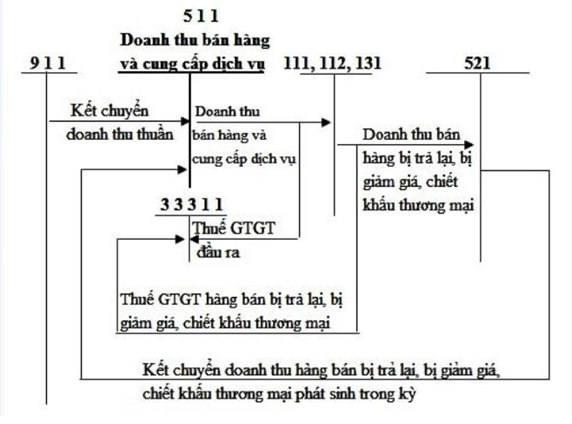

Hướng dẫn cách hạch toán doanh thu bán và hàng cung cấp dịch vụ - Tài khoản 511 áp dụng chế độ kế toán theo Thông tư 99/2025/TT-BTC mới nhất 2026, hạch toán doanh thu bán hàng - sản phẩm, dịch vụ trong một kỳ hoặc nhiều kỳ như vận tải, du lịch, cho thuê BĐS, doanh thu hoa hồng đại lý bán đúng giá ... Hạch toán kết chuyển doanh thu cuối kỳ.
I. Tài khoản 511 - Doanh thu bán hàng và cung cấp dịch vụ
Tài khoản này dùng để phản ánh doanh thu bán hàng và cung cấp dịch vụ của doanh nghiệp trong một kỳ kế toán, bao gồm:
-
Doanh thu bán hàng (bao gồm bán hàng hóa, sản phẩm, bất động sản đầu tư, bán quyền được nhận hàng hóa, sử dụng dịch vụ của đơn vị khác,...);
-
Doanh thu cung cấp dịch vụ (bao gồm cả dịch vụ cho thuê hoạt động tài sản);
-
Các khoản trợ cấp, trợ giá của Nhà nước cho doanh nghiệp theo quy định của pháp luật;
-
Doanh thu khác.
1. Điều kiện ghi nhận doanh thu
- Doanh nghiệp chỉ ghi nhận doanh thu bán hàng khi đồng thời thỏa mãn các điều kiện sau:
- Doanh nghiệp đã chuyển giao phần lớn rủi ro và lợi ích gắn liền với quyền sở hữu sản phẩm, hàng hóa cho người mua;
- Doanh nghiệp không còn nắm giữ quyền quản lý hàng hóa như người sở hữu hoặc quyền kiểm soát hàng hóa;
- Doanh thu được xác định tương đối chắc chắn;
- Doanh nghiệp đã hoặc sẽ thu được lợi ích kinh tế từ giao dịch bán hàng;
- Xác định được các chi phí liên quan đến giao dịch bán hàng.
- Doanh nghiệp chỉ ghi nhận doanh thu cung cấp dịch vụ khi đồng thời thỏa mãn các điều kiện sau:
- Doanh thu được xác định tương đối chắc chắn. Khi hợp đồng quy định người mua được quyền trả lại dịch vụ đã mua theo những điều kiện cụ thể, doanh nghiệp chỉ được ghi nhận doanh thu khi những điều kiện cụ thể đó không còn tồn tại và người mua không được quyền trả lại dịch vụ đã cung cấp;
- Doanh nghiệp đã hoặc sẽ thu được lợi ích kinh tế từ giao dịch cung cấp dịch vụ đó;
- Xác định được phần công việc đã hoàn thành vào thời điểm báo cáo;
- Xác định được chi phí phát sinh cho giao dịch và chi phí để hoàn thành giao dịch cung cấp dịch vụ đó.
2. Trường hợp hợp đồng kinh tế bao gồm nhiều giao dịch, doanh nghiệp phải nhận biết các giao dịch để ghi nhận doanh thu phù hợp với Chuẩn mực kế toán Việt Nam, ví dụ:
- Trường hợp doanh nghiệp bán hàng kèm theo nghĩa vụ cung cấp dịch vụ sau bán hàng (ngoài điều khoản bảo hành thông thường), doanh nghiệp phải ghi nhận riêng doanh thu bán hàng và doanh thu cung cấp dịch vụ;
- Trường hợp hợp đồng quy định bên bán hàng chịu trách nhiệm lắp đặt sản phẩm, hàng hóa cho người mua thì doanh thu chỉ được ghi nhận sau khi việc lắp đặt được thực hiện xong;
- Trường hợp doanh nghiệp có nghĩa vụ phải cung cấp cho người mua hàng hóa, dịch vụ miễn phí hoặc chiết khấu, giảm giá trong giao dịch dành cho khách hàng truyền thống: doanh nghiệp căn cứ bản chất hợp đồng, cam kết của doanh nghiệp với khách hàng xem doanh nghiệp có tham gia vào việc cung cấp hàng hóa, dịch vụ (đơn vị là chủ thể trực tiếp cung cấp hàng hóa, dịch vụ) hay chỉ là đơn vị trung gian sắp xếp (đơn vị là đại lý hoặc đóng vai trò là bên bán quyền sử dụng dịch vụ mà dịch vụ này do đơn vị khác chịu trách nhiệm cung cấp cho khách hàng, kiểm soát về giá cả, chất lượng) để xác định thời điểm hoàn thành cung cấp hàng hóa, dịch vụ làm căn cứ ghi nhận doanh thu tương ứng với hàng hóa, dịch vụ cung cấp miễn phí đó với người mua.
- Trường hợp doanh nghiệp là chủ thể thực hiện cung cấp các hàng hóa, dịch vụ cho khách hàng nếu doanh nghiệp có quyền kiểm soát hàng hóa, dịch vụ cụ thể trước khi chuyển giao hàng hóa, dịch vụ đó cho khách hàng. Tuy nhiên, doanh nghiệp có thể không nhất thiết phải kiểm soát một hàng hóa, dịch vụ cụ thể nếu doanh nghiệp có quyền sở hữu, quyền sử dụng về mặt pháp lý đối với hàng hóa, dịch vụ đó chỉ trong một khoảng thời gian ngắn trước khi chuyển giao quyền sở hữu, quyền sử dụng cho khách hàng.
- Trường hợp doanh nghiệp đóng vai trò là đại lý nếu nghĩa vụ thực hiện của doanh nghiệp là sắp xếp, tổ chức để bên thứ 3 cung cấp hàng hóa hoặc dịch vụ cụ thể. Doanh nghiệp là đại lý sẽ không kiểm soát một trong các yếu tố về giá bán, chất lượng,… của hàng hóa, dịch vụ cụ thể được cung cấp cho khách hàng. Trong trường hợp này, doanh thu bán hàng và cung cấp dịch vụ của doanh nghiệp là phần hoa hồng hoặc số tiền doanh nghiệp được hưởng thông qua việc sắp xếp, tổ chức để bên thứ 3 cung cấp hàng hóa hoặc dịch vụ đó trực tiếp cho khách hàng.
3. Doanh thu bán hàng và cung cấp dịch vụ thuần mà doanh nghiệp thực hiện được trong kỳ kế toán có thể thấp hơn doanh thu bán hàng và cung cấp dịch vụ ghi nhận ban đầu do có các khoản chiết khấu thương mại, giảm giá hàng bán cho khách hàng hoặc hàng đã bán bị trả lại (do không đảm bảo điều kiện về quy cách, phẩm chất,… ghi trong hợp đồng kinh tế).
Trường hợp sản phẩm, hàng hóa, dịch vụ đã tiêu thụ từ các kỳ trước, đến kỳ sau phải chiết khấu thương mại, giảm giá hàng bán, hoặc hàng bán bị trả lại thì doanh nghiệp được ghi giảm doanh thu theo nguyên tắc:
- Nếu sản phẩm, hàng hóa, dịch vụ đã tiêu thụ từ các kỳ trước, đến kỳ sau phải giảm giá, phải chiết khấu thương mại, bị trả lại nhưng phát sinh trước thời điểm phát hành Báo cáo tài chính, doanh nghiệp phải coi đây là một sự kiện phát sinh sau ngày kết thúc kỳ kế toán cần điều chỉnh và ghi giảm doanh thu trên Báo cáo tài chính của kỳ lập báo cáo.
- Nếu sản phẩm, hàng hóa, dịch vụ đã tiêu thụ từ các kỳ trước, đến kỳ sau phải giảm giá, phải chiết khấu thương mại, bị trả lại sau thời điểm phát hành Báo cáo tài chính thì doanh nghiệp ghi giảm doanh thu của kỳ phát sinh.
4. Doanh thu trong một số trường hợp được xác định như sau:
4.1. Doanh thu bán hàng, cung cấp dịch vụ không bao gồm các khoản thuế gián thu phải nộp, như thuế GTGT (kể cả trường hợp nộp thuế GTGT theo phương pháp trực tiếp), thuế TTĐB, thuế xuất khẩu, thuế bảo vệ môi trường….
- Trường hợp không tách ngay được số thuế gián thu phải nộp tại thời điểm ghi nhận doanh thu, doanh nghiệp được ghi nhận doanh thu bao gồm cả số thuế phải nộp và định kỳ phải ghi giảm doanh thu đối với số thuế gián thu phải nộp. Khi lập báo cáo kết quả hoạt động kinh doanh, chỉ tiêu “Doanh thu bán hàng và cung cấp dịch vụ” và chỉ tiêu “Các khoản giảm trừ doanh thu” đều không bao gồm số thuế gián thu phải nộp trong kỳ do về bản chất các khoản thuế gián thu không được coi là một bộ phận của doanh thu.
4.2. Trường hợp trong kỳ doanh nghiệp đã thu tiền nhưng đến cuối kỳ vẫn chưa giao hàng, chưa cung cấp dịch vụ cho khách hàng thì không được coi là đã bán hàng, đã cung cấp dịch vụ trong kỳ và không được ghi vào Tài khoản 511 - Doanh thu bán hàng và cung cấp dịch vụ mà chỉ hạch toán vào bên Có Tài khoản 131 - Phải thu của khách hàng về khoản tiền đã thu của khách hàng. Khi thực giao hàng, cung cấp dịch vụ cho người mua sẽ hạch toán vào Tài khoản 511 - Doanh thu bán hàng và cung cấp dịch vụ về trị giá hàng đã giao, dịch vụ đã cung cấp phù hợp với các điều kiện ghi nhận doanh thu.
4.3. Trường hợp doanh nghiệp sử dụng hàng hóa, dịch vụ để khuyến mại, giảm giá cho khách hàng thì phải căn cứ vào bản chất của giao dịch để kế toán hàng hóa, dịch vụ khuyến mại, giảm giá cho phù hợp theo nguyên tắc:
a) Trường hợp khách hàng được nhận khuyến mại, giảm giá mà không kèm theo điều kiện phải tham gia bất kỳ hợp đồng mua hàng hóa, dịch vụ nào của doanh nghiệp thì doanh nghiệp ghi nhận giá trị sản phẩm tặng kèm cho khách hàng vào chi phí bán hàng của doanh nghiệp.
b) Trường hợp khách hàng chỉ được nhận khuyến mại, giảm giá khi đã mua hàng hóa, dịch vụ của doanh nghiệp hoặc đang tham gia vào hợp đồng mua hàng hóa, dịch vụ của doanh nghiệp thì doanh nghiệp phải phân bổ số tiền thu được để tính doanh thu cho cả hàng hóa, dịch vụ bán và hàng hóa, dịch vụ khuyến mại, giảm giá và giá trị sản phẩm, hàng hóa miễn phí được phản ánh vào giá vốn hàng bán. Tuy nhiên, doanh nghiệp căn cứ vào bản chất của hàng hóa, dịch vụ đã cam kết; cách thức, thông lệ kinh doanh; danh mục hàng hóa, dịch vụ kinh doanh của doanh nghiệp để hạch toán cho phù hợp.
4.4. Trường hợp doanh nghiệp có doanh thu bán hàng và cung cấp dịch vụ bằng ngoại tệ thì phải quy đổi ngoại tệ ra đơn vị tiền tệ kế toán theo tỷ giá giao dịch thực tế tại thời điểm phát sinh nghiệp vụ kinh tế. Trường hợp có nhận tiền ứng trước của khách hàng bằng ngoại tệ thì doanh thu tương ứng với số tiền ứng trước được quy đổi ra đơn vị tiền tệ kế toán theo tỷ giá giao dịch thực tế tại thời điểm nhận ứng trước.
4.5. Doanh thu bán bất động sản của doanh nghiệp là chủ đầu tư phải thực hiện theo nguyên tắc:
a) Đối với các công trình, hạng mục công trình mà doanh nghiệp là chủ đầu tư (kể cả các công trình, hạng mục công trình doanh nghiệp vừa là chủ đầu tư, vừa tự thi công), doanh nghiệp không được ghi nhận doanh thu bán bất động sản theo Chuẩn mực kế toán Hợp đồng xây dựng và không được ghi nhận doanh thu đối với số tiền thu trước của khách hàng theo tiến độ. Việc ghi nhận doanh thu bán bất động sản phải đảm bảo thoả mãn đồng thời 5 điều kiện sau:
- Bất động sản đã hoàn thành toàn bộ và bàn giao cho người mua, doanh nghiệp đã chuyển giao rủi ro và lợi ích gắn liền với quyền sở hữu bất động sản cho người mua;
- Doanh nghiệp không còn nắm giữ quyền quản lý bất động sản như người sở hữu bất động sản hoặc quyền kiểm soát bất động sản;
- Doanh thu được xác định tương đối chắc chắn;
- Doanh nghiệp đã thu được hoặc sẽ thu được lợi ích kinh tế từ giao dịch bán bất động sản;
- Xác định được chi phí liên quan đến giao dịch bán bất động sản.
b) Đối với các công trình, hạng mục công trình mà doanh nghiệp là chủ đầu tư (kể cả các công trình, hạng mục công trình doanh nghiệp vừa là chủ đầu tư, vừa tự thi công), trường hợp khách hàng có quyền hoàn thiện nội thất của bất động sản và doanh nghiệp thực hiện việc hoàn thiện nội thất của bất động sản theo đúng thiết kế, mẫu mã, yêu cầu của khách hàng thì doanh nghiệp được ghi nhận doanh thu khi hoàn thành, bàn giao phần xây thô cho khách hàng. Trường hợp này, doanh nghiệp phải có hợp đồng hoàn thiện nội thất bất động sản riêng với khách hàng, trong đó quy định rõ yêu cầu của khách hàng về thiết kế, kỹ thuật, mẫu mã, hình thức hoàn thiện nội thất bất động sản và biên bản bàn giao phần xây thô cho khách hàng.
c) Đối với bất động sản phân lô bán nền, nếu đã chuyển giao nền đất cho khách hàng (không phụ thuộc đã làm xong thủ tục pháp lý về giấy chứng nhận quyền sử dụng đất hay chưa) và hợp đồng không hủy ngang, chủ đầu tư được ghi nhận doanh thu đối với nền đất đã bán khi thỏa mãn đồng thời các điều kiện sau:
- Đã chuyển giao rủi ro và lợi ích gắn liền với quyền sử dụng đất cho người mua;
- Doanh thu được xác định tương đối chắc chắn;
- Xác định được chi phí liên quan đến giao dịch bán nền đất;
- Doanh nghiệp đã thu được hoặc chắc chắn sẽ thu được lợi ích kinh tế từ giao dịch bán nền đất.
d) Đối với các công trình là căn hộ du lịch, căn hộ văn phòng kết hợp lưu trú hoặc sản phẩm tương tự theo quy định của pháp luật hiện hành về kinh doanh bất động sản: Doanh nghiệp căn cứ vào bản chất các điều khoản trong hợp đồng về thời hạn, về quyền và nghĩa vụ của các bên trong hợp đồng bán căn hộ du lịch, căn hộ văn phòng kết hợp lưu trú hoặc sản phẩm tương tự; các Chuẩn mực kế toán Việt Nam có liên quan và chế độ kế toán doanh nghiệp để xác định từng cấu phần bán, cấu phần thuê, cấu phần tài chính (nếu có),... có liên quan đến hợp đồng đó để áp dụng chính sách kế toán phù hợp nhất với đặc điểm, bản chất của giao dịch để làm cơ sở cho việc ghi nhận doanh thu tương ứng với từng cấu phần. Đồng thời, doanh nghiệp phải thuyết minh trên Báo cáo tài chính về chính sách kế toán, bản chất của hợp đồng (quyền và nghĩa vụ của các bên) và cách thức hạch toán mà doanh nghiệp đánh giá là phù hợp nhất.
5. Đối với doanh nghiệp cung cấp dịch vụ ủy thác xuất nhập khẩu, doanh thu là phí ủy thác xuất nhập khẩu mà doanh nghiệp được hưởng.
6. Đối với đơn vị nhận gia công vật tư, hàng hóa, doanh thu là số tiền gia công thực tế được hưởng, không bao gồm giá trị vật tư, hàng hóa nhận gia công.
7. Trường hợp bán hàng theo phương thức trả chậm, trả góp, doanh thu được xác định theo giá bán trả tiền ngay.
8. Đối với hoạt động quản lý đầu tư xây dựng
- Đối với các doanh nghiệp được giao quản lý các dự án đầu tư, xây dựng sử dụng nguồn vốn NSNN hoặc vốn trái phiếu Chính phủ, trái phiếu địa phương, trường hợp lập dự toán chi phí quản lý dự án theo các quy định của Nhà nước về đầu tư xây dựng sử dụng vốn NSNN thì khoản kinh phí quản lý dự án mà được NSNN chi trả không được hạch toán là doanh thu, chi phí của doanh nghiệp mà hạch toán là khoản thu hộ, chi hộ.
- Đối với các doanh nghiệp làm nhiệm vụ quản lý dự án theo hợp đồng tư vấn thì số tiền thu theo hợp đồng được ghi nhận là doanh thu cung cấp dịch vụ. Trường hợp doanh nghiệp dự án nếu bản chất chỉ là đơn vị thay mặt cho các nhà đầu tư thực hiện công việc quản lý dự án theo quy định trong hợp đồng, thanh toán các hợp đồng xây lắp, tư vấn, giải phóng mặt bằng,... cho các nhà thầu và tập hợp chi phí đầu tư xây dựng các công trình, hạng mục công trình để quyết toán toàn bộ kinh phí cũng như bàn giao lại các công trình, hạng mục công trình hoàn thành cho chủ đầu tư thì doanh nghiệp dự án không được ghi nhận khoản kinh phí dự án nhận được từ các chủ đầu tư hoặc từ vốn vay là doanh thu của doanh nghiệp mà phải ghi nhận là một khoản phải trả, phải nộp khác (thu hộ - chi hộ).
9. Nguyên tắc ghi nhận doanh thu đối với giao dịch bán hàng hóa, cung cấp dịch vụ theo chương trình dành cho khách hàng truyền thống
a) Đặc điểm của giao dịch bán hàng hóa, cung cấp dịch vụ theo chương trình dành cho khách hàng truyền thống: Giao dịch theo chương trình dành cho khách hàng truyền thống phải thỏa mãn đồng thời tất cả các điều kiện sau
- Khi mua hàng hóa, dịch vụ, khách hàng được tích điểm thưởng để khi đạt đủ số điểm theo quy định sẽ được nhận một lượng hàng hóa, dịch vụ miễn phí hoặc được giảm giá chiết khấu;
- Người bán phải xác định được giá trị hợp lý của hàng hóa, dịch vụ sẽ phải cung cấp miễn phí hoặc số tiền sẽ chiết khấu, giảm giá cho người mua khi người mua đạt được các điều kiện của chương trình (tích đủ điểm thưởng);
- Chương trình phải có giới hạn về thời gian cụ thể, rõ ràng, nếu quá thời hạn theo quy định của chương trình mà khách hàng chưa đáp ứng được các điều kiện đặt ra thì người bán sẽ không còn nghĩa vụ phải cung cấp hàng hóa, dịch vụ miễn phí hoặc giảm giá, chiết khấu cho người mua (số điểm thưởng của người mua tích lũy hết giá trị sử dụng);
- Sau khi nhận hàng hóa, dịch vụ miễn phí hoặc được chiết khấu giảm giá, người mua bị trừ số điểm tích lũy theo quy định của chương trình (đổi điểm tích lũy để lấy hàng hóa, dịch vụ hoặc số tiền chiết khấu, giảm giá khi mua hàng);
- Việc cung cấp hàng hóa, dịch vụ miễn phí hoặc chiết khấu, giảm giá cho người mua khi đạt đủ số điểm thưởng có thể được thực hiện bởi chính người bán hoặc một bên thứ ba theo quy định của chương trình.
b) Nguyên tắc kế toán
- Tại thời điểm bán hàng hóa, cung cấp dịch vụ, người bán phải xác định riêng giá trị hợp lý của hàng hóa, dịch vụ phải cung cấp miễn phí hoặc số tiền phải chiết khấu, giảm giá cho người mua khi người mua đạt được các điều kiện theo quy định của chương trình.
- Doanh thu được ghi nhận là tổng số tiền phải thu hoặc đã thu trừ đi giá trị hợp lý của hàng hóa, dịch vụ phải cung cấp miễn phí hoặc số phải chiết khấu, giảm giá cho người mua. Giá trị của hàng hóa, dịch vụ phải cung cấp miễn phí hoặc số phải chiết khấu, giảm giá cho người mua chỉ được ghi nhận là doanh thu chờ phân bổ. Nếu hết thời hạn của chương trình mà người mua không đạt đủ điều kiện theo quy định và không được hưởng hàng hóa dịch vụ miễn phí, khoản doanh thu chờ phân bổ nêu trên được kết chuyển vào doanh thu bán hàng, cung cấp dịch vụ.
- Khi người mua đạt được các điều kiện theo quy định của chương trình, việc xử lý khoản doanh thu chờ phân bổ được thực hiện như sau:
- Trường hợp người bán trực tiếp cung cấp hàng hóa, dịch vụ miễn phí hoặc chiết khấu, giảm giá cho người mua: Khoản doanh thu chờ phân bổ tương ứng với giá trị hợp lý của số hàng hóa, dịch vụ cung cấp miễn phí hoặc số phải giảm giá, chiết khấu cho người mua được ghi nhận là doanh thu bán hàng, cung cấp dịch vụ tại thời điểm người mua đã nhận được hàng hóa, đã được cung cấp dịch vụ miễn phí hoặc được chiết khấu, giảm giá theo quy định của chương trình.
- Trường hợp bên thứ ba có nghĩa vụ cung cấp hàng hóa, dịch vụ miễn phí hoặc chiết khấu, giảm giá cho người mua: Nếu hợp đồng giữa người bán và bên thứ ba đó không mang tính chất hợp đồng đại lý, khi bên thứ ba thực hiện việc cung cấp hàng hóa, dịch vụ, chiết khấu giảm giá, khoản doanh thu chờ phân bổ được kết chuyển sang doanh thu bán hàng, cung cấp dịch vụ. Nếu hợp đồng mang tính đại lý, chỉ phần chênh lệch giữa khoản doanh thu chờ phân bổ và số tiền phải trả cho bên thứ ba mới được ghi nhận là doanh thu. Số tiền thanh toán cho bên thứ ba được coi như việc thanh toán khoản nợ phải trả.
- Trường hợp có phát sinh chênh lệch giữa số ước tính nghĩa vụ phải trả cho khách hàng truyền thống với số thực tế phát sinh thì cuối kỳ kế toán doanh nghiệp điều chỉnh tăng, giảm doanh thu bán hàng và cung cấp dịch vụ trong kỳ.
10. Nguyên tắc ghi nhận và xác định doanh thu của hợp đồng xây dựng
a) Doanh thu của hợp đồng xây dựng bao gồm:
- Doanh thu ban đầu được ghi trong hợp đồng;
- Các khoản tăng, giảm khi thực hiện hợp đồng, các khoản tiền thưởng và các khoản thanh toán khác nếu các khoản này có khả năng làm thay đổi doanh thu và có thể xác định được một cách đáng tin cậy:
- Doanh thu của hợp đồng có thể tăng hay giảm ở từng thời kỳ, ví dụ: Nhà thầu và khách hàng có thể đồng ý với nhau về các thay đổi và các yêu cầu làm tăng hoặc giảm doanh thu của hợp đồng trong kỳ tiếp theo so với hợp đồng được chấp thuận lần đầu tiên; Doanh thu đã được thoả thuận trong hợp đồng với giá cố định có thể tăng vì lý do giá cả tăng lên; Doanh thu theo hợp đồng có thể bị giảm do nhà thầu không thực hiện đúng tiến độ hoặc không đảm bảo chất lượng xây dựng theo thoả thuận trong hợp đồng; Khi hợp đồng với giá cố định quy định mức giá cố định cho một đơn vị sản phẩm hoàn thành thì doanh thu theo hợp đồng sẽ tăng hoặc giảm khi khối lượng sản phẩm tăng hoặc giảm.
-
Khoản tiền thưởng là các khoản phụ thêm trả cho nhà thầu nếu nhà thầu thực hiện hợp đồng đạt hay vượt mức yêu cầu. Khoản tiền thưởng được tính vào doanh thu của hợp đồng xây dựng khi có đủ 02 điều kiện:
- (i) Chắc chắn đạt hoặc vượt mức một số tiêu chuẩn cụ thể đã được ghi trong hợp đồng;
- (ii) Khoản tiền thưởng được xác định một cách đáng tin cậy.
- Khoản thanh toán khác mà nhà thầu thu được từ khách hàng hay một bên khác để bù đắp cho các chi phí không bao gồm trong giá hợp đồng. Ví dụ: Sự chậm trễ do khách hàng gây nên; Sai sót trong các chỉ tiêu kỹ thuật hoặc thiết kế và các tranh chấp về các thay đổi trong việc thực hiện hợp đồng. Việc xác định doanh thu tăng thêm từ các khoản thanh toán trên còn tùy thuộc vào rất nhiều yếu tố không chắc chắn và thường phụ thuộc vào kết quả của nhiều cuộc đàm phán. Do đó, các khoản thanh toán khác chỉ được tính vào doanh thu của hợp đồng xây dựng khi:
- Các cuộc thoả thuận đã đạt được kết quả là khách hàng sẽ chấp thuận bồi thường;
- Khoản thanh toán khác được khách hàng chấp thuận và có thể xác định được một cách đáng tin cậy.
b) Ghi nhận doanh thu của hợp đồng xây dựng theo 1 trong 2 trường hợp sau:
- Trường hợp hợp đồng xây dựng quy định nhà thầu được thanh toán theo tiến độ kế hoạch, khi kết quả thực hiện hợp đồng xây dựng được ước tính một cách đáng tin cậy thì doanh thu của hợp đồng xây dựng được ghi nhận tương ứng với phần công việc đã hoàn thành do nhà thầu tự xác định vào ngày kết thúc kỳ kế toán mà không phụ thuộc vào hóa đơn thanh toán theo tiến độ kế hoạch đã lập hay chưa và số tiền ghi trên hóa đơn là bao nhiêu;
- Trường hợp hợp đồng xây dựng quy định nhà thầu được thanh toán theo giá trị khối lượng thực tế, khi kết quả thực hiện hợp đồng xây dựng được xác định một cách đáng tin cậy và được khách hàng xác nhận thì doanh thu và chi phí liên quan đến hợp đồng được ghi nhận tương ứng với phần công việc đã hoàn thành được khách hàng xác nhận trong kỳ phản ánh trên hóa đơn đã lập.
c) Khi kết quả thực hiện hợp đồng xây dựng không thể ước tính được một cách đáng tin cậy thì:
- Doanh thu chỉ được ghi nhận tương đương với chi phí của hợp đồng đã phát sinh mà việc được hoàn trả là tương đối chắc chắn;
- Chi phí của hợp đồng chỉ được ghi nhận là chi phí trong kỳ khi các chi phí này đã phát sinh.
11. Đối với trường hợp cho thuê tài sản có nhận trước tiền cho thuê của nhiều kỳ thì việc ghi nhận doanh thu được thực hiện theo nguyên tắc phân bổ số tiền cho thuê nhận trước phù hợp với thời hạn cho thuê. Trường hợp hợp đồng có nhiều cấu phần (bán, thuê,…) thì đơn vị căn cứ điều khoản hợp đồng liên quan đến thời hạn, điều kiện thuê để ghi nhận doanh thu tương ứng với từng cấu phần, đồng thời, doanh nghiệp phải theo dõi, thuyết minh trong Thuyết minh báo cáo tài chính về thời hạn, đặc điểm, giá trị làm căn cứ để xác định, ghi nhận doanh thu tương ứng với từng cấu phần.
12. Đối với doanh nghiệp thực hiện nhiệm vụ cung cấp sản phẩm, hàng hóa, dịch vụ được Nhà nước trợ cấp, trợ giá theo quy định thì doanh thu trợ cấp, trợ giá là khoản trợ cấp, trợ giá được hưởng.
13. Trường hợp bán sản phẩm, hàng hóa kèm theo sản phẩm, hàng hóa, thiết bị thay thế (phòng ngừa trong những trường hợp sản phẩm, hàng hóa bị hỏng hóc) thì doanh nghiệp phải phân bổ doanh thu cho sản phẩm, hàng hóa được bán và sản phẩm hàng hóa, thiết bị giao cho khách hàng để thay thế phòng ngừa hỏng hóc. Giá trị của sản phẩm, hàng hóa, thiết bị thay thế được ghi nhận vào giá vốn hàng bán.
14. Không ghi nhận doanh thu bán hàng và cung cấp dịch vụ đối với:
- Trị giá hàng hóa, vật tư, bán thành phẩm xuất giao cho bên ngoài gia công chế biến;
- Trị giá hàng gửi đi bán theo phương thức gửi bán đại lý, ký gửi (chưa được xác định là đã bán);
- Số tiền thu từ việc bán sản phẩm sản xuất thử;
- Các khoản doanh thu hoạt động tài chính;
- Các khoản thu nhập khác.
Sơ đồ chữ T hạch toán tài khoản 511

II. Kết cấu và nội dung Tài khoản 511
|
Bên Nợ |
Bên Có |
|
- Các khoản thuế gián thu phải nộp (GTGT, TTĐB, XK, ...); - Doanh thu hàng bán bị trả lại kết chuyển cuối kỳ; - Khoản giảm giá hàng bán kết chuyển cuối kỳ; - Khoản chiết khấu thương mại kết chuyển cuối kỳ; - Kết chuyển doanh thu thuần vào tài khoản 911 "Xác định kết quả kinh doanh". |
Doanh thu bán sản phẩm, hàng hóa, bất động sản đầu tư và cung cấp dịch vụ của doanh nghiệp thực hiện trong kỳ kế toán. |
| Tài khoản 511 không có số dư cuối kỳ | |
Theo Thông tư 99/2025/TT-BTC thì Tài khoản 511 - Doanh thu bán hàng và cung cấp dịch vụ không có tài khoản cấp 2 như thông tư 200/2014/TT-BTC trước đó
Doanh nghiệp có thể mở thêm các tài khoản chi tiết doanh thu phát sinh từ hợp đồng với khách hàng (ví dụ doanh thu bán hàng hóa, sản phẩm, cung cấp dịch vụ, bán BĐSĐT, bán quyền được nhận hàng hóa, quyền được sử dụng dịch vụ,...) cho phù hợp với đặc điểm hoạt động sản xuất, kinh doanh và yêu cầu quản lý của đơn vị mình.
III. Cách hạch toán Doanh thu bán hàng cung cấp dịch vụ một số nghiệp vụ:
|
3.1. Doanh thu của hàng hóa, dịch vụ được xác định là đã bán trong kỳ kế toán:
Nợ các TK 111, 112, 131,... (tổng giá thanh toán)
Có TK 511 - Doanh thu bán hàng và cung cấp dịch vụ
Có TK 333 - Thuế và các khoản phải nộp Nhà nước (nếu có).
Trường hợp không tách ngay được các khoản thuế gián thu phải nộp, doanh nghiệp ghi nhận doanh thu bao gồm cả thuế phải nộp. Định kỳ, doanh nghiệp xác định nghĩa vụ thuế phải nộp và ghi giảm doanh thu, ghi:
Nợ TK 511 - Doanh thu bán hàng và cung cấp dịch vụ
Có TK 333 - Thuế và các khoản phải nộp Nhà nước.
|
|
|
3.2. Đối với giao dịch hàng đối hàng không tương tự:
Khi xuất sản phẩm, hàng hóa đối lấy vật tư, hàng hóa, TSCĐ không tương tự, kế toán phản ánh doanh thu bán hàng và cung cấp dịch vụ để đối lấy vật tư, hàng hóa, TSCĐ khác theo giá trị hợp lý tài sản nhận về sau khi điều chỉnh các khoản tiền thu thêm hoặc trả thêm. Trường hợp không xác định được giá trị hợp lý tài sản nhận về thì doanh thu xác định theo giá trị hợp lý của tài sản mang đi trao đổi.
- Khi ghi nhận doanh thu, ghi:
Nợ TK 131 - Phải thu của khách hàng (tổng giá thanh toán)
Có TK 511 - Doanh thu bán hàng và cung cấp dịch vụ
Có TK 333 - Thuế và các khoản phải nộp Nhà nước (nếu có).
Đồng thời ghi nhận giá vốn hàng mang đi trao đổi, ghi:
Nợ TK 632 - Giá vốn hàng bán
Có các TK 155, 156,...
- Khi nhận vật tư, hàng hóa, TSCĐ do trao đổi, doanh nghiệp phản ánh giá trị vật tư, hàng hóa, TSCĐ nhận được do trao đổi, ghi:
Nợ các TK 152, 153, 156, 211,...
Nợ TK 133 - Thuế GTGT được khấu trừ (nếu có)
Có TK 131 - Phải thu của khách hàng (tổng giá thanh toán).
- Trường hợp được thu thêm tiền do giá trị hợp lý của sản phẩm, hàng hóa đưa đi trao đổi lớn hơn giá trị hợp lý của vật tư, hàng hóa, TSCĐ nhận được do trao đổi thì khi nhận được tiền của bên có vật tư, hàng hóa, TSCĐ trao đổi, ghi:
Nợ các TK 111, 112 (số tiền đã thu thêm)
Có TK 131 - Phải thu của khách hàng.
- Trường hợp phải trả thêm tiền do giá trị hợp lý của sản phẩm, hàng hóa đưa đi trao đổi nhỏ hơn giá trị hợp lý của vật tư, hàng hóa, TSCĐ nhận được do trao đổi thì khi trả tiền cho bên có vật tư, hàng hóa, TSCĐ trao đổi, ghi:
Nợ TK 131 - Phải thu của khách hàng
Có các TK 111, 112, ...
|
|
|
3.3. Khi bán hàng hóa theo phương thức trả chậm, trả góp:
- Khi bán hàng trả chậm, trả góp, doanh nghiệp phản ánh doanh thu bán hàng theo giá bán thu tiền ngay, ghi :
Nợ TK 131 - Phải thu của khách hàng
Có TK 511 - Doanh thu bán hàng và cung cấp dịch vụ (giá bán thu tiền ngay)
Có TK 333 - Thuế và các khoản phải nộp Nhà nước (nếu có).
- Định kỳ, ghi nhận doanh thu tiền lãi bán hàng trả chậm, trả góp trong kỳ, ghi:
Nợ TK 131 - Phải thu của khách hàng
Có TK 515 - Doanh thu hoạt động tài chính (lãi trả chậm, trả góp).
- Khi thu được tiền gồm cả gốc và tiền lãi trả chậm, trả góp, ghi:
Nợ các TK 111, 112, ...
Có TK 131 - Phải thu của khách hàng.
|
|
|
3.4. Trường hợp bán hàng hóa, dịch vụ kèm theo hàng hóa, dịch vụ và bản chất giao dịch là doanh nghiệp phải phân bổ giá giao dịch cho cả hàng hóa, dịch vụ chính và hàng hóa, dịch vụ tặng kèm:
a) Phản ánh giá vốn hàng bán bao gồm giá trị hàng hóa, dịch vụ được bán và giá trị hàng hóa, dịch vụ tặng kèm, ghi:
Nợ TK 632 - Giá vốn hàng bán
Có các TK 153, 155, 156, ...
b) Ghi nhận doanh thu bán hàng và cung cấp dịch vụ (bao gồm cả doanh thu bán hàng hóa, dịch vụ chính và doanh thu bán hàng hóa, dịch vụ tặng kèm), ghi:
Nợ các TK 111, 112, 131
Có TK 511 - Doanh thu bán hàng và cung cấp dịch vụ
Có TK 333 - Thuế và các khoản phải nộp Nhà nước (nếu có).
|
|
|
3.5. Doanh thu phát sinh từ chương trình dành cho khách hàng truyền thống
a) Khi bán hàng hóa, cung cấp dịch vụ trong chương trình dành cho khách hàng truyền thống, doanh nghiệp ghi nhận doanh thu trên cơ sở tổng số tiền thu được trừ (-) đi phần doanh thu chưa thực hiện là ước tính giá trị hợp lý của hàng hóa, dịch vụ sẽ cung cấp miễn phí hoặc số tiền chiết khấu, giảm giá cho khách hàng:
Nợ các TK 111, 112, 131
Có TK 511 - Doanh thu bán hàng và cung cấp dịch vụ
Có TK 3387 - Doanh thu chờ phân bổ
Có TK 333 - Thuế và các khoản phải nộp Nhà nước (nếu có).
b) Khi hết thời hạn quy định của chương trình, nếu khách hàng không đáp ứng được các điều kiện để hưởng các ưu đãi như nhận hàng hóa, dịch vụ miễn phí hoặc chiết khấu giảm giá, doanh nghiệp không phát sinh nghĩa vụ phải thanh toán cho khách hàng, doanh nghiệp kết chuyển doanh thu chưa thực hiện thành doanh thu bán hàng và cung cấp dịch vụ, ghi:
Nợ TK 3387 - Doanh thu chờ phân bổ
Có TK 511 - Doanh thu bán hàng và cung cấp dịch vụ.
c) Khi khách hàng đáp ứng đủ các điều kiện của chương trình để được hưởng ưu đãi, khoản doanh thu chưa thực hiện được xử lý như sau:
- Trường hợp doanh nghiệp là chủ thể trực tiếp cung cấp hàng hóa, dịch vụ miễn phí hoặc chiết khấu, giảm giá cho khách hàng, khoản doanh thu chưa thực hiện được kết chuyển sang ghi nhận là doanh thu bán hàng và cung cấp dịch vụ tại thời điểm thực hiện xong nghĩa vụ với khách hàng (đã chuyển giao hàng hóa, dịch vụ miễn phí hoặc đã chiết khấu, giảm giá cho khách hàng):
Nợ TK 3387 - Doanh thu chờ phân bổ
Có TK 511 - Doanh thu bán hàng và cung cấp dịch vụ
Có TK 333 - Thuế và các khoản phải nộp Nhà nước (nếu có).
Đồng thời phản ánh giá vốn hàng bán, ghi:
Nợ TK 632 - Giá vốn hàng bán
Có các TK 154, 155, 156,...
- Trường hợp bên thứ ba là người cung cấp hàng hóa, dịch vụ hoặc chiết khấu giảm giá cho khách hàng, ghi:
Nợ TK 3387 - Doanh thu chờ phân bổ
Có TK 511 - Doanh thu bán hàng và cung cấp dịch vụ (phần chênh lệch giữa doanh thu chưa thực hiện và số tiền trả cho bên thứ ba được coi như doanh thu hoa hồng đại lý)
Có TK 333 - Thuế và các khoản phải nộp Nhà nước (nếu có)
Có các TK 111, 112, 331, ... (Số tiền phải trả cho bên thứ ba).
d) Cuối kỳ kế toán, trường hợp giá trị ước tính nghĩa vụ nợ phải trả chênh lệch so với số tiền trả cho bên thứ ba:
+ Chênh lệch lớn hơn:
Nợ TK 511 - Doanh thu bán hàng và cung cấp dịch vụ
Có TK 3387 - Doanh thu chờ phân bổ.
+ Chênh lệch nhỏ hơn:
Nợ TK 3387 - Doanh thu chờ phân bổ
Có TK 511 - Doanh thu bán hàng và cung cấp dịch vụ.
|
|
|
3.6. Khi phát sinh doanh thu cung cấp dịch vụ của từng kỳ, căn cứ vào chứng từ liên quan, ghi:
Nợ các TK 111, 112, 131,...
Có TK 511 - Doanh thu bán hàng và cung cấp dịch vụ
Có TK 3331 - Thuế GTGT phải nộp (nếu có).
|
|
|
3.7. Trường hợp thu trước tiền nhiều kỳ từ hoạt động cung cấp dịch vụ:
- Khi nhận tiền của khách hàng trả trước cho nhiều kỳ, ghi:
Nợ các TK 111, 112 (tổng số tiền nhận trước)
Có TK 3387 - Doanh thu chờ phân bổ
Có TK 3331 - Thuế GTGT phải nộp (nếu có).
- Định kỳ, tính và kết chuyển doanh thu của kỳ kế toán, ghi:
Nợ TK 3387 - Doanh thu chờ phân bổ
Có TK 511 - Doanh thu bán hàng và cung cấp dịch vụ...
- Số tiền phải trả lại cho khách hàng vì hợp đồng không được thực hiện tiếp hoặc thời gian thực hiện ngắn hơn thời gian đã thu tiền trước (nếu có), ghi:
Nợ TK 3387 - Doanh thu chờ phân bổ
Nợ TK 3331 - Thuế GTGT phải nộp (số tiền trả lại cho bên thuê về thuế GTGT của hoạt động cung cấp dịch vụ không được thực hiện) (nếu có)
Có các TK 111, 112,... (tổng số tiền trả lại).
|
|
|
3.8. Trường hợp bán hàng thông qua đại lý, doanh nghiệp vẫn có quyền kiểm soát hàng giao đại lý
a) Kế toán ở đơn vị giao hàng đại lý:
- Khi xuất kho sản phẩm, hàng hóa giao cho các đại lý phải lập Phiếu xuất kho hàng gửi bán đại lý. Căn cứ vào phiếu xuất kho hàng gửi bán đại lý, ghi:
Nợ TK 157 - Hàng gửi đi bán
Có các TK 155, 156,...
- Khi hàng hóa giao cho đại lý đã bán được, căn cứ vào Bảng kê hóa đơn bán ra của hàng hóa đã bán do các bên nhận đại lý lập và gửi về để doanh nghiệp phản ánh doanh thu bán hàng, ghi:
Nợ các TK 111, 112, 131,... (tổng giá thanh toán)
Có TK 511 - Doanh thu bán hàng và cung cấp dịch vụ
Có TK 3331 - Thuế GTGT phải nộp (33311) (nếu có).
Đồng thời phản ánh giá vốn của hàng bán ra, ghi:
Nợ TK 632 - Giá vốn hàng bán
Có TK 157 - Hàng gửi đi bán.
- Số tiền hoa hồng phải trả cho đơn vị nhận bán hàng đại lý, ghi:
Nợ TK 641 - Chi phí bán hàng
Nợ TK 133 - Thuế GTGT được khấu trừ (1331) (nếu có)
Có các TK 111, 112, 131,...
b) Kế toán ở đơn vị nhận đại lý:
- Khi nhận hàng đại lý, doanh nghiệp chủ động mở sổ theo dõi và ghi chép thông tin về toàn bộ giá trị hàng hóa nhận bán đại lý phản ánh vào tài sản nhận giữ hộ và thuyết minh trong Báo cáo tài chính.
- Khi hàng hóa nhận bán đại lý đã bán được, căn cứ vào Hóa đơn GTGT hoặc Hóa đơn bán hàng và các chứng từ liên quan, doanh nghiệp phản ánh số tiền bán hàng đại lý phải trả cho bên giao hàng, ghi:
Nợ các TK 111, 112, 131,...
Có TK 331 - Phải trả cho người bán (tổng giá thanh toán).
- Định kỳ, khi xác định doanh thu hoa hồng bán hàng đại lý được hưởng, ghi:
Nợ TK 331 - Phải trả cho người bán
Có TK 511 - Doanh thu bán hàng và cung cấp dịch vụ
Có TK 3331 - Thuế GTGT phải nộp (nếu có).
- Khi trả tiền bán hàng đại lý cho bên giao hàng, ghi:
Nợ TK 331 - Phải trả cho người bán
Có các TK 111, 112.
|
|
|
3.9. Đối với sản phẩm, hàng hóa, dịch vụ xuất bán giữa các đơn vị trực thuộc trong nội bộ doanh nghiệp
3.9.1. Trường hợp không ghi nhận doanh thu giữa các khâu trong nội bộ doanh nghiệp, chỉ ghi nhận doanh thu khi thực bán hàng ra bên ngoài:
a) Kế toán tại đơn vị bán
- Khi xuất sản phẩm, hàng hóa, dịch vụ đến các đơn vị trực thuộc trong nội bộ doanh nghiệp, lập Phiếu xuất kho kiêm vận chuyển nội bộ hoặc hóa đơn GTGT, ghi:
Nợ TK 136 - Phải thu nội bộ (giá vốn)
Có các TK 155, 156,...
Có TK 333 - Thuế và các khoản phải nộp Nhà nước (nếu có).
- Khi nhận được thông báo từ đơn vị mua là sản phẩm, hàng hóa đã được tiêu thụ ra bên ngoài, đơn vị bán ghi nhận doanh thu, giá vốn:
+ Phản ánh giá vốn hàng bán, ghi:
Nợ TK 632 - Giá vốn hàng bán
Có TK 136 - Phải thu nội bộ.
+ Phản ánh doanh thu, ghi:
Nợ TK 136 - Phải thu nội bộ
Có TK 511 - Doanh thu bán hàng và cung cấp dịch vụ.
b) Kế toán tại đơn vị mua
- Khi nhận được sản phẩm, hàng hóa, dịch vụ do đơn vị trực thuộc trong nội bộ doanh nghiệp chuyển đến, doanh nghiệp căn cứ vào các chứng từ có liên quan, ghi:
Nợ các TK 155, 156,... (giá vốn)
Nợ TK 133 - Thuế GTGT được khấu trừ (nếu có)
Có TK 336 - Phải trả nội bộ.
- Khi bán sản phẩm, hàng hóa, dịch vụ ra bên ngoài, doanh nghiệp ghi nhận doanh thu, giá vốn như giao dịch bán hàng thông thường.
- Trường hợp đơn vị trực thuộc không được phân cấp hạch toán đến kết quả kinh doanh sau thuế, doanh nghiệp phải kết chuyển doanh thu, giá vốn cho đơn vị cấp trên:
+ Kết chuyển giá vốn, ghi:
Nợ TK 336 - Phải trả nội bộ
Có TK 632 - Giá vốn hàng bán.
+ Kết chuyển doanh thu, ghi:
Nợ TK 511 - Doanh thu bán hàng và cung cấp dịch vụ
Có TK 336 - Phải trả nội bộ.
3.9.2. Trường hợp có ghi nhận doanh thu bán hàng giữa các khâu trong nội bộ doanh nghiệp:
- Bên bán ghi:
Nợ TK 136 - Phải thu nội bộ
Có TK 511 - Doanh thu bán hàng và cung cấp dịch vụ (chi tiết giao dịch bán hàng nội bộ)
Có TK 333 - Thuế và các khoản phải nộp Nhà nước (nếu có).
- Bên mua ghi:
Nợ các TK 155, 156,...
Nợ TK 133 - Thuế GTGT được khấu trừ (nếu có).
Có TK 336 - Phải trả nội bộ.
- Tại thời điểm kết thúc kỳ kế toán, căn cứ vào Biên bản đối chiếu công nợ giữa nợ phải thu và nợ phải trả nội bộ của cùng một đối tượng thì doanh nghiệp bù trừ trên sổ kế toán tương ứng, ghi:
Nợ TK 336 - Phải trả nội bộ (3368)
Có TK 136 - Phải thu nội bộ (1368).
|
|
|
3.10. Đối với hoạt động gia công hàng hóa:
a) Kế toán tại đơn vị giao hàng để gia công:
- Khi xuất kho giao hàng để gia công, ghi:
Nợ TK 154 - Chi phí sản xuất, kinh doanh dở dang
Có các TK 152, 156,...
- Ghi nhận chi phí gia công hàng hóa và thuế GTGT được khấu trừ:
Nợ TK 154 - Chi phí sản xuất, kinh doanh dở dang
Nợ TK 133 - Thuế GTGT được khấu trừ (nếu có)
Có các TK 111, 112, 331,...
- Khi nhận lại hàng gửi gia công chế biến hoàn thành nhập kho, ghi:
Nợ các TK 152, 156,...
Có TK 154 - Chi phí sản xuất, kinh doanh dở dang.
b) Kế toán tại đơn vị nhận hàng để gia công:
- Khi nhận hàng để gia công, doanh nghiệp chủ động theo dõi và ghi chép thông tin về toàn bộ giá trị vật tư, hàng hóa nhận gia công vào vật tư, hàng hóa, TSCĐ nhận giữ hộ, nhận ký gửi, nhận gia công và thuyết minh trong Báo cáo tài chính.
- Khi xác định doanh thu từ số tiền gia công thực tế được hưởng, ghi:
Nợ các TK 111, 112, 131,...
Có TK 511 - Doanh thu bán hàng và cung cấp dịch vụ
Có TK 3331 - Thuế GTGT phải nộp (33311) (nếu có).
|
|
|
3.11. Kế toán doanh thu hợp đồng xây dựng.
- Trường hợp hợp đồng xây dựng quy định nhà thầu được thanh toán theo tiến độ, khi kết quả thực hiện hợp đồng xây dựng được ước tính một cách đáng tin cậy thì kế toán căn cứ vào chứng từ phản ánh doanh thu tương ứng với phần công việc đã hoàn thành (không phải hóa đơn) do nhà thầu tự xác định tại thời điểm lập Báo cáo tài chính, ghi:
Nợ TK 337 - Thanh toán theo tiến độ hợp đồng xây dựng
Có TK 511 - Doanh thu bán hàng và cung cấp dịch vụ.
- Căn cứ vào Hóa đơn GTGT được lập theo tiến độ để phản ánh số tiền khách hàng phải trả theo tiến độ đã ghi trong hợp đồng, ghi:
Nợ TK 131 - Phải thu của khách hàng
Có TK 337 - Thanh toán theo tiến độ hợp đồng xây dựng
Có TK 3331 - Thuế GTGT phải nộp (nếu có).
- Khi nhận được tiền do khách hàng trả, hoặc nhận tiền khách hàng ứng trước, ghi:
Nợ các TK 111, 112,...
Có TK 131 - Phải thu của khách hàng.
- Trường hợp hợp đồng xây dựng quy định nhà thầu được thanh toán theo giá trị khối lượng thực hiện, khi kết quả thực hiện hợp đồng xây dựng được xác định một cách đáng tin cậy và được khách hàng xác nhận thì doanh nghiệp căn cứ vào hóa đơn, ghi:
Nợ các TK 111, 112, 131,...
Có TK 511 - Doanh thu bán hàng và cung cấp dịch vụ
Có TK 3331 - Thuế GTGT phải nộp (nếu có).
- Khoản tiền thưởng thu được từ khách hàng trả phụ thêm cho nhà thầu khi thực hiện hợp đồng đạt hoặc vượt một số chỉ tiêu cụ thể đã được ghi trong hợp đồng, ghi:
Nợ các TK 111, 112, 131,...
Có TK 511 - Doanh thu bán hàng và cung cấp dịch vụ
Có TK 3331 - Thuế GTGT phải nộp (nếu có).
- Khoản bồi thường thu được từ khách hàng hay bên khác để bù đắp cho các chi phí không bao gồm trong giá trị hợp đồng (ví dụ: Sự chậm trễ do khách hàng gây nên; sai sót trong các chỉ tiêu kỹ thuật hoặc thiết kế và các tranh chấp về các thay đổi trong việc thực hiện hợp đồng), ghi:
Nợ các TK 111, 112, 131,...
Có TK 511 - Doanh thu bán hàng và cung cấp dịch vụ
Có TK 3331 - Thuế GTGT phải nộp (nếu có).
- Khi nhận được tiền thanh toán khối lượng công trình hoàn thành hoặc khoản ứng trước từ khách hàng, ghi:
Nợ các TK 111, 112,...
Có TK 131 - Phải thu của khách hàng.
|
|
|
3.12. Kế toán doanh thu từ các khoản trợ cấp, trợ giá của Nhà nước cho doanh nghiệp:
- Phản ánh khoản trợ cấp, trợ giá được hưởng theo quy định, ghi:
Nợ TK 333 - Thuế và các khoản phải nộp Nhà nước (3339)
Có TK 511 - Doanh thu bán hàng và cung cấp dịch vụ.
- Khi nhận được tiền trợ cấp, trợ giá của Nhà nước, ghi:
Nợ các TK 111, 112,...
Có TK 333 - Thuế và các khoản phải nộp Nhà nước (3339).
|
|
|
3.13. Kế toán bán, thanh lý bất động sản đầu tư xem hướng dẫn tại Tài khoản 217 - Bất động sản đầu tư.
|
|
|
3.14. Trường hợp trả lương cho người lao động bằng sản phẩm, hàng hóa: Doanh nghiệp phải ghi nhận doanh thu đối với sản phẩm, hàng hóa như đối với giao dịch bán hàng thông thường, ghi:
Nợ TK 334 - Phải trả người lao động (tổng giá thanh toán)
Có TK 511 - Doanh thu bán hàng và cung cấp dịch vụ
Có TK 333 - Thuế và các khoản phải nộp Nhà nước (33311, 3335) (nếu có).
|
|
|
3.15. Trường hợp sử dụng sản phẩm, hàng hóa để biếu, tặng cho người lao động được trang trải bằng quỹ khen thưởng, phúc lợi: Doanh nghiệp phải ghi nhận doanh thu đối với sản phẩm, hàng hóa như đối với giao dịch bán hàng thông thường, ghi:
Nợ TK 353 - Quỹ khen thưởng, phúc lợi (tổng giá thanh toán)
Có TK 511 - Doanh thu bán hàng và cung cấp dịch vụ
Có TK 3331 - Thuế GTGT phải nộp (33311) (nếu có).
|
|
|
3.16. Trường hợp, doanh thu bán hàng và cung cấp dịch vụ phát sinh bằng ngoại tệ: Việc xác định tỷ giá giao dịch thực tế, tỷ giá ghi sổ và các giao dịch phát sinh liên quan đến các giao dịch bán hàng và cung cấp dịch vụ phát sinh bằng ngoại tệ được hướng dẫn tại Tài khoản 413 - Chênh lệch tỷ giá hối đoái.
|
|
|
3.17. Tại thời điểm kết thúc kỳ kế toán, kết chuyển doanh thu của hàng bán bị trả lại, khoản giảm giá hàng bán và chiết khấu thương mại phát sinh trong kỳ trừ vào doanh thu thực tế trong kỳ để xác định doanh thu thuần, ghi:
Nợ TK 511 - Doanh thu bán hàng và cung cấp dịch vụ
Có TK 521 - Các khoản giảm trừ doanh thu.
|
|
|
3.18. Tại thời điểm kết thúc kỳ kế toán, kết chuyển doanh thu thuần sang
Tài khoản 911 - Xác định kết quả kinh doanh, ghi:
Nợ TK 511 - Doanh thu bán hàng và cung cấp dịch vụ
Có TK 911 - Xác định kết quả kinh doanh.
|
Chúc bạn thành công! Kế toán Diệu Tâm liên tục khai giảng các lớp học thực hành kế toán thực tế: Dạy hoàn thiện sổ sách, lập Báo cáo tài chính, Quyết toán thuế thực tế, chuyên sâu trực tiếp trên chứng từ thực tế
-----------------------------------------------